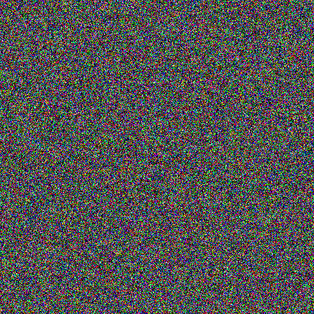

Membership is Ownership
A Robust Model Watermark Detection
with Quantile Regression
Feng Jiang, advised by Prof. Yingshu Li
CS Seminar: AIoT & Privacy-Aware Computing
Georgia State University — 2026
Roadmap
1 Background & Motivation
2 Method
3 Experiments & Results
4 Discussion & Q&A
Part 1
Background & Motivation
The Scenario
You spend 6 months and $600,000 training a state-of-the-art diffusion model.
One day, you discover a startup selling AI-generated art —
powered by your model.
They downloaded your weights, fine-tuned on their own data, and launched a commercial product.
How do you prove it’s yours?
The Cost Asymmetry
Training a Model
$600K
6 months · Thousands of GPU hours
Massive dataset curation
Stealing a Model
$0
One download · Minutes
Fine-tune & rebrand
Diffusion Models: Forward Process
Gradually add Gaussian noise until the image becomes pure noise.
→
→
→
→
→

t = 999
Pure noise
$q(x_t \mid x_0) = \mathcal{N}(x_t;\, \sqrt{\bar\alpha_t}\, x_0,\; (1-\bar\alpha_t)\,\mathbf{I})$
$\Leftrightarrow\quad x_t = \sqrt{\bar\alpha_t}\, x_0 + \sqrt{1-\bar\alpha_t}\,\boldsymbol{\epsilon}, \qquad \boldsymbol{\epsilon} \sim \mathcal{N}(\mathbf{0},\,\mathbf{I})$
Diffusion Models: Reverse Process
The model learns to reverse the noising — recovering clean images from noise.
A neural network that learned to recover images from noise.
Why They’re Valuable
- Stable Diffusion — open-weight, powers thousands of apps
- DALL·E, Midjourney — billions in commercial value
- Domain-specific models — medical imaging, drug design, satellite imagery
Training requires massive compute + curated data.
These models are valuable intellectual property.
Current IP Protection: Watermarking
Embed an explicit signature into the model’s parameters or output behavior.
Model M
→
Embed
Watermark
→
Mwm
(watermarked)
Examples: trigger-based watermarks (WDM, StegaStamp), parameter perturbation, output fingerprinting.
The Problem with Watermarks
Mwm
→
Adversary
Fine-tunes
→
Watermark
Gone ✗
Invasive — modifying parameters may degrade generation quality
Removable — fine-tuning can wash out embedded signatures
Detectable — adversary can specifically target and remove the watermark
A Different Idea: The Fingerprint
🔍
Crime Scene Fingerprints
Not planted deliberately.
Left naturally by contact.
≈
🧠
Model "Fingerprints"
Not embedded deliberately.
Left naturally by training.
Diffusion models reconstruct training data with systematically lower error than unseen data.
“Training data
IS the watermark.”
No modification to the model. No embedding. No quality loss.
The model’s own memory is the ownership evidence.
So how do we measure this memory?
t-error: The Core Signal
How much error does the model make when reconstructing an image?
Image x
→
Add noise
at step t
→
Noisy xt
→
Model
reconstructs x̂₀
→
Error
‖x − x̂₀‖²
Training data → low error (model "remembers")
Unseen data → high error (model guesses)
Member vs Non-member Reconstruction
SD v1.4 + LoRA A1 model, single-step reconstruction at t=250. Same noise applied to both.
Gaussian QR: Precise Threshold Control
We have scores. How do we decide the threshold?
Fit a conditional Gaussian model in log-score space:
$\tau(\text{FPR}) = \mu(x) + \sigma(x) \cdot \Phi^{-1}(1 - \text{FPR})$
Key value: Closed-form threshold at any FPR level.
Control false positives at 0.1% or 0.01% — no empirical calibration needed.
From Detection to Verification
Not just “I recognize this image,”
but “statistical evidence that this model
was trained on my private data,
and public models were not.”
Three-Point Verification Protocol
⟷
C1: Consistency
Suspect model ≈ owner model on evidence set.
Same lineage confirmed.
↕
C2: Separation
Owner model reconstructs evidence set much better than public reference models.
p < 10−6, Cohen's d > 2
×
C3: Ratio
Mean reference model error / mean owner error on evidence set.
Ratio > 5×
Verdict
All three criteria must hold simultaneously:
C1 ∧ C2 ∧ C3 →
VERIFIED
Any criterion fails →
REJECTED
This is hypothesis testing, not a black-box classifier.
Every decision comes with p-values, effect sizes, and confidence intervals.
System Overview
Evidence
set W
→
t-error
K timesteps
→
Q25
aggregation
→
Gaussian QR
threshold
→
Three-point
criteria
→
Verdict
Compare suspect model against public reference models using W as the diagnostic set.
Key Properties
Training-Free
No retraining, no extra optimization. Just compute scores on existing models.
Non-Invasive
Zero modification to model parameters or output quality.
Statistically Rigorous
p-values, effect sizes, FPR control — auditable evidence.
Survives Fine-tuning
Memorization signal persists after adversarial adaptation.
Part 3
Experiments & Results
Score Distribution (Real Data)
SD v1.4 + LoRA, 100 member images, 200 epochs. Zero overlap between distributions.
Results: 4 Datasets
| Dataset | Model | T-Error | Cohen's d | Ratio |
|---|
| CIFAR-10 | Owner | 28.6 | 23.9 | 24.4× |
| Reference | 697.6 | — | — |
| CIFAR-100 | Owner | 33.2 | 18.5 | 19.2× |
| Reference | 636.6 | — | — |
| STL-10 | Owner | 70.7 | 33.4 | 101× |
| Reference | 7152.9 | — | — |
| CelebA | Owner | 63.5 | 26.1 | 26.6× |
| Reference | 1691.8 | — | — |
All p < 10−100. All three verification criteria satisfied.
Robustness: The Adversary Fine-tunes
Threat model:
- Adversary obtains owner model weights
- Fine-tunes using MMD (Maximum Mean Discrepancy) on new data
- Deploys the adapted model commercially
Question: Can we still verify ownership after fine-tuning?
After Fine-tuning: Still Verified
| Dataset | Model | T-Error | d | Ratio | Verdict |
|---|
| CIFAR-10 | Owner (A) | 28.6 | 23.9 | 24.4× | ✓ |
| Fine-tuned (B) | 28.6 | 23.9 | 24.4× | ✓ |
| STL-10 | Owner (A) | 70.7 | 33.4 | 101× | ✓ |
| Fine-tuned (B) | 71.2 | 33.4 | 100× | ✓ |
| CelebA | Owner (A) | 63.5 | 26.1 | 26.6× | ✓ |
| Fine-tuned (B) | 63.5 | 26.1 | 26.6× | ✓ |
“You can change the model, but you can’t erase what it has seen.”
Extension: Stable Diffusion
Stable Diffusion is now the most widely used open-weight generative model.
Most real-world products are built by fine-tuning SD on private data.
Setup:
- Owner: SD v1.4 + LoRA, fine-tuned on 1,000 private COCO images
- Reference: Original SD v1.4 (unmodified)
- Adversary B1: Steals owner model, fine-tunes on different COCO images (domain shift)
- Adversary B2: Steals owner model, fine-tunes on synthetic images (task shift)
Question: Can we still detect the stolen lineage after the adversary modifies the model?
SD Results: Owner vs Adversaries
Delta scores (target minus reference). Members shift left, non-members stay near zero.
Separation persists even after adversary fine-tuning.
MiO vs SleeperMark (CVPR 2025)
| MiO (Ours) | SleeperMark |
|---|
| Proactive embedding | Not needed | Required |
| Secret key / decoder | Not needed | Required |
| Quality loss (LPIPS) | 0.000 | 0.311 |
| Detection AUC | 0.995 | 0.543 |
| After domain shift (B1) | 0.986 | N/A |
| After task shift (B2) | 0.980 | N/A |
No embedding, no key, no quality loss, and still outperforms the watermark baseline.
Part 4
Discussion & Wrap-up
Scope & Future Work
White-box access — requires model weights.
Standard in IP litigation & open-weight models.
Full retraining — if adversary trains from scratch, memorization is erased.
But that costs as much as the original.
MIA = dual-use — privacy attack on individuals, IP defense for model owners.
Same technique, opposite framing.
Open questions: black-box (API-only) verification · cross-architecture transfer (DiT, flow-matching) · adversarial memorization erasure · legal framework integration
Key Takeaways
- Training data IS the watermark
No model modification needed. The model's own memory serves as ownership evidence.
- Cohen's d > 18 across 4 datasets
Separation that is orders of magnitude beyond existing MIA literature.
- Survives fine-tuning & generalizes to SD
Robust against realistic post-theft adaptation. Works from 32×32 DDIM to 512×512 Stable Diffusion.
Thank You
Feng Jiang
fjiang4@student.gsu.edu
Paper: Membership is Ownership: A Robust Model Watermark Detection with Quantile Regression
ICML 2026 (submitted)
Questions?